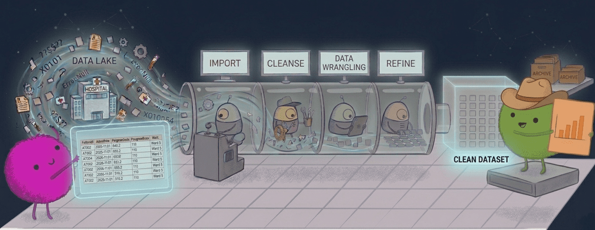

library(tidyverse)
patients <- read_csv("../data/hes_patients.csv")
admissions <- read_csv("../data/hes_admissions.csv")
episodes <- read_csv("../data/hes_episodes.csv")
outcomes <- read_csv("../data/hes_outcomes.csv")Data wrangling
This practical uses synthetic Hospital Episode Statistics (HES) data on hip fractures to practise core data manipulation skills: importing data, validating keys, joining data at different levels, creating derived variables, and producing summaries. You will work with four linked tables that reflect common NHS-style data structure: patient-level, spell-level, episode-level, and outcomes.
All data in this practical is simulated for teaching purposes.

Datasets
We will use four linked datasets:
hes_patients
One row per patient.
Contains patient-level information that does not usually change across admissions, such as:
patient_id- Sex
- Year of birth
- Ethnicity
- Area deprivation
hes_admissions
One row per hospital spell.
A spell is one continuous hospital stay, from admission to discharge. Contains spell-level information such as:
spell_idpatient_id- Admission date
- Discharge date
- Admitting hospital
hes_episodes
One or more rows per spell.
An episode is one phase of care within a hospital stay, usually under one consultant or specialty.
Contains episode-level information such as:
episode_idspell_id- Episode start and end date
- Procedure codes
- Diagnosis codes
hes_outcomes
One row per spell with derived outcomes.
Contains summary measures calculated for each hospital stay, such as:
spell_id- Length of stay
- 30-day mortality
- Readmission indicator
- Discharge destination
TipWhat is a spell and what is an episode?
In HES data, a spell is the full hospital stay from admission to discharge.
An episode is one part of that stay under a particular consultant or clinical team.
For example, a patient is admitted with a hip fracture through the emergency department. They are first under trauma and orthopaedics for surgery, and later transferred to a geriatric medicine team for ongoing recovery. That could appear as one spell made up of two episodes.
So, one spell can contain multiple episodes.
Join keys
The four tables are linked, but they are not all stored at the same level. Before joining them, it helps to be clear about which identifier belongs to which unit.
patientsis at the patient level, with one row perpatient_idadmissionsis at the spell level, with one row perspell_idoutcomesis also at the spell level, with one row perspell_idepisodesis at the episode level, with potentially multiple rows for eachspell_id
Import
- Download
hes_patients.csv,hes_admissions.csv,hes_episodes.csv, andhes_outcomes.csv, then import all four datasets usingread_csv().
TipTip: Portable paths with
here
library(tidyverse)
library(here)
patients <- read_csv(here("data", "hes_patients.csv"))
admissions <- read_csv(here("data", "hes_admissions.csv"))
episodes <- read_csv(here("data", "hes_episodes.csv"))
outcomes <- read_csv(here("data", "hes_outcomes.csv"))Data cleaning
In the admissions table, the discharge_destination column contains some values such as “UNK” and “Unknown” that are being used to represent missing data.
- Use
recodeto replace “UNK” and “Unknown” with properNAvalues indischarge_destination.
Validate keys and relationships
- Next, check the linking keys used to connect tables:
- Every
admissions$patient_idshould match apatients$patient_id - Every
outcomes$spell_idshould match anadmissions$spell_id - Every
episodes$spell_idshould match anadmissions$spell_id
- Every
Also check for unmatched records (sometimes called orphan records): rows in one table whose linking key does not appear in the related table. For example, if an admission has a patient_id that does not exist in patients, that admission cannot be linked to a patient record.
flowchart TB
classDef patients fill:#eef6ff,stroke:#7aa6d8,stroke-width:1.5px,color:#1f2d3d
classDef admissions fill:#f3f8ee,stroke:#8fb27e,stroke-width:1.5px,color:#1f2d3d
classDef episodes fill:#fff4e8,stroke:#d9a15b,stroke-width:1.5px,color:#1f2d3d
classDef outcomes fill:#f7efff,stroke:#a88acb,stroke-width:1.5px,color:#1f2d3d
P["patients<br/><code>patient_id</code>"]
A["admissions<br/><code>spell_id</code><br><code>patient_id</code>"]
E["episodes<br/><code>episode_id</code><br><code>spell_id</code>"]
O["outcomes<br/><code>spell_id</code>"]
P <-->|"one-to-many"| A
A <-->|"one-to-many"| E
A <-->|"one-to-one"| O
class P patients
class A admissions
class E episodes
class O outcomes
Build a spell-level analysis table
We now want to merge the tables to create a single data file, a frame containing information about each spell. This will combine information from admissions, outcomes, and patients.
- Join in two steps: first join
admissionstooutcomesbyspell_id, then joinpatientsto the result bypatient_id. You can use a pipe to combine these join operations and store the final spell-level table asspell_tbl.
Create
episode_summaryfrom theepisodestable. This table is currently at episode level, so group byspell_idand summarise to produce a new spell-level data frame with one row per spell. It should contain:n_episodes: count of episodes in the spelltotal_episode_days: total days covered by episodes in the spelln_consultant_specialties: number of distinct consultant specialties in the spell
- Join
episode_summarytospell_tblbyspell_idto create your final analysis tabledat.
Derive analysis fields
- Create these derived columns in
dat:
age_at_admissionfromdate_of_birthandadmission_dateage_band(<75, 75-84, 85+)surgery_delay_group(<=2 days, >2 days)admission_year
Make comparisons
- Compare outcome rates by surgery delay group (<=2 days vs >2 days) for:
readmission_30ddeath_30dlong_stay_flag
- Summarise outcomes by
age_bandandsex.
- Rank providers by mean LOS and readmission rate. Restrict to providers with at least 500 spells.
Communicate
Create a simple summary table of provider-level results (top 10 by mean LOS) using
group_byandsummarise.Create using
tinytable: